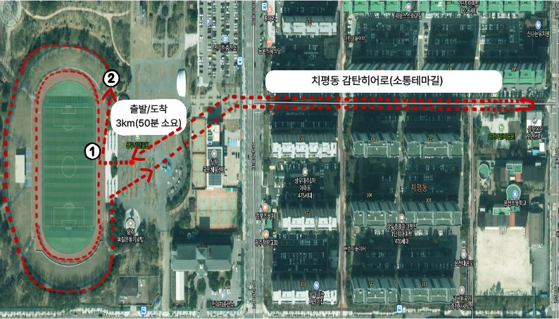
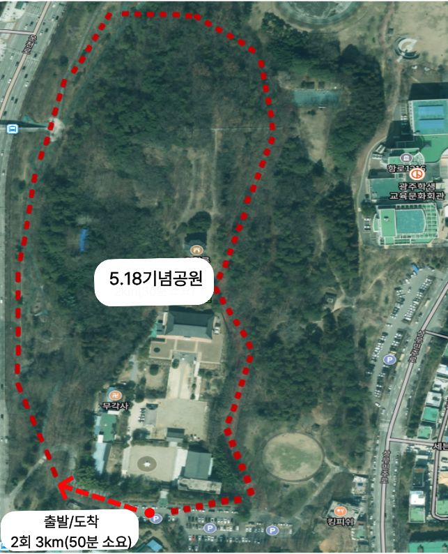
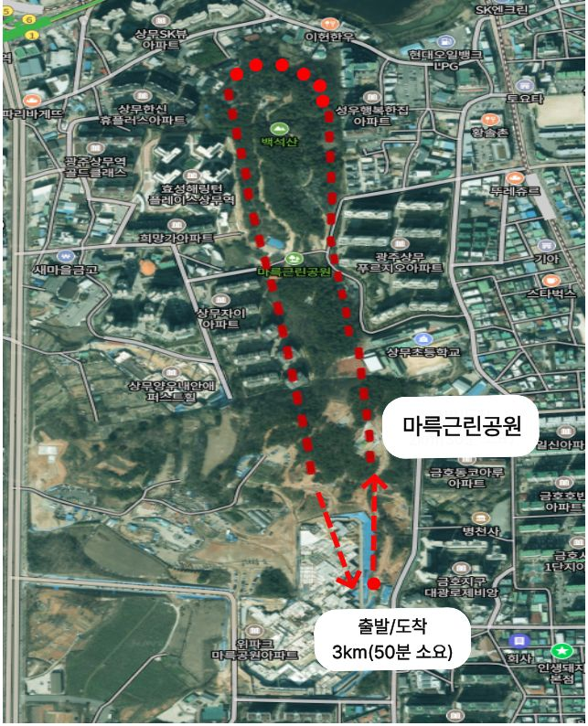
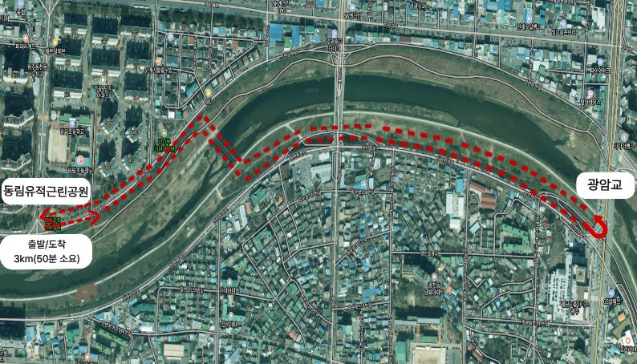
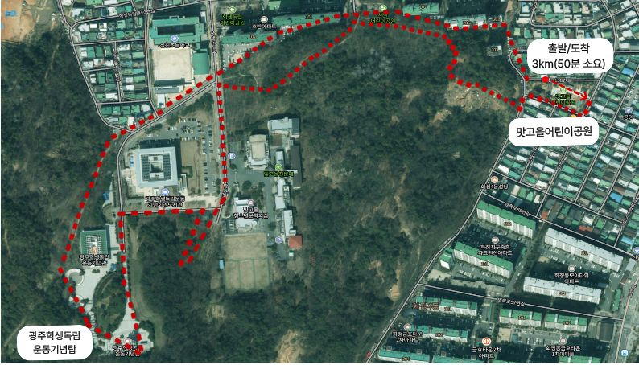

원하는 공원을 누르면 상세 안내가 나옵니다.

상무시민공원 코스 정보
· 코스위치 : (출발/도착)상무시민공원 ⇆ 치평동 감탄히어로(소통테마길)
· 거 리 : 왕복 3km
· 소요시간 : 50분
· 세부특징 : 도심속 녹지 공간을 활용한 주민소통 중심코스

5.18기념공원 코스 정보
· 코스위치 : (출발/도착)무각사 입구 주차장
· 거 리 : 2회 순환 3km
· 소요시간 : 50분
· 세부특징 : 5.18 역사적 상징성 및 숲길 중심의 명상코스

마륵근린공원 코스 정보
· 코스위치 : (출발/도착)마륵근린공원 일원
· 거 리 : 왕복 3km
· 소요시간 : 50분
· 세부특징 : 도심 공원 산책로 중심의 가족단위 친화코스

동림유적근린공원 코스 정보
· 코스위치 : (출발/도착)동림유적근린공원 ⇆ 광암교 코스
· 거 리 : 왕복 3km
· 소요시간 : 50분
· 세부특징 : 광주천변 자연생태 및 유적지 연계 치유코스

맛고을어린이공원 코스 정보
· 코스위치 : (출발/도착)맛고을어린이공원 ⇆ 광주학생독립운동기념탑 코스
· 거 리 : 왕복 3km
· 소요시간 : 50분
· 세부특징 : 지역역사자원 및 청년문화 거점 연계 코스